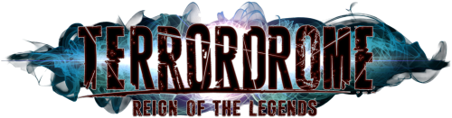
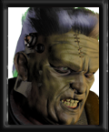
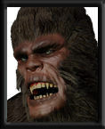
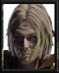
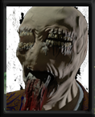
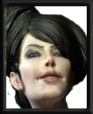
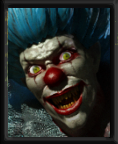
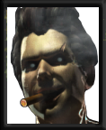
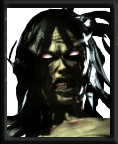
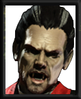
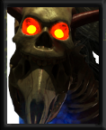
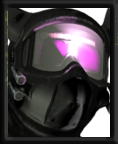
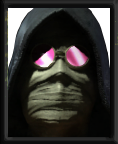
| Universal: P = Punch K = Kick M = Medium Attack S = Strong Attack D = Dodge EX = Modifier |
Keyboard: P = J K = L M = K S = H D = V EX = C |
XBOX Controller: P = A K = X M = Y S = B D = RB EX = RT |